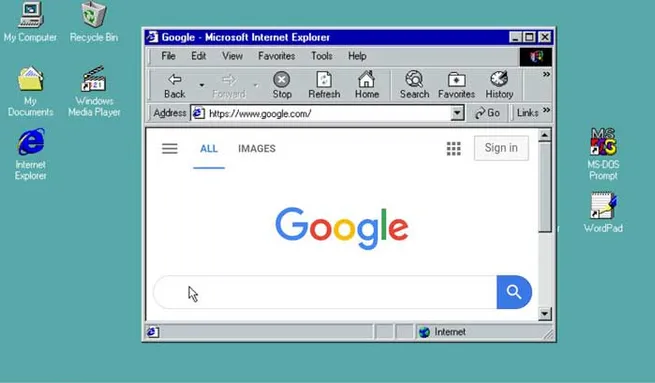

Saiba mais sobre Tim Berners-Lee:
Tudo sobre Tim Berners-Lee.
A internet veio primeiro e é uma rede de computadores, essa rede possibilita a conexão entre dispositivos. E também é o sistema que permite a troca de informações, enviar, receber, etc.
Já a web é o conjunto de conteúdos que são acessados pela internet a partir de um navegador.
A história da internet começou durante a Guerra Fria (1945-1991), período em que os Estados Unidos e a União Soviética competiam por poder e influência. A primeira rede de computadores, Arpanet, foi criada pelo Departamento de Defesa dos EUA (ARPA) com o objetivo de facilitar a troca de informações e proteger-se contra possíveis ataques. No dia 29 de outubro de 1969, a Arpanet fez sua primeira ligação entre a Universidade da Califórnia e o Instituto de Pesquisa de Stanford, o que marcou o envio do primeiro e-mail.
Na década de 1990, o físico e professor britânico Tim Berners-Lee criou a World Wide Web (WWW), um navegador que revolucionou a forma como usamos a internet hoje em dia.
Apesar de não ter inventado a conexão entre computadores, Berners-Lee desenvolveu o modelo de acesso que usamos no dia a dia.
Nesse período, houve o “boom da internet”, com a popularização de novos navegadores, como:

| Navegador | Ano de Lançamento |
|---|---|
| Internet Explorer | 1995 |
| Netscape | 1994 |
| Mosaic | 1993 |